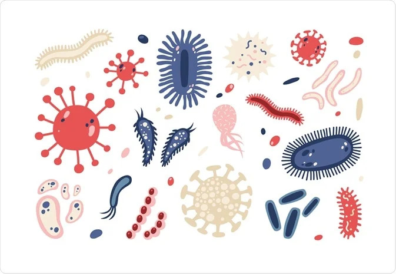

Microorganisms

Microorganisms are diverse and abundant microscopic organisms that include bacteria, archaea, fungi, protozoa, and algae. They play essential roles in various ecosystems, contributing to nutrient cycling, decomposition, symbiotic relationships, and biogeochemical processes. Despite their small size, microorganisms have a significant impact on the environment, human health, and industry.
Key Characteristics
- 1. Microscopic Size: Microorganisms are typically too small to be seen with the naked eye and require magnification to be observed. They range in size from a few micrometers to sub-micrometer scales.
- 2. Diversity: Microorganisms encompass a vast diversity of species, including bacteria, archaea, fungi, protozoa, and algae. Each group exhibits unique morphological, physiological, and ecological characteristics
- 3. Ubiquity: Microorganisms are found virtually everywhere on Earth, inhabiting diverse environments such as soil, water, air, and the bodies of plants and animals. They thrive in extreme conditions, including high temperatures, acidity, salinity, and pressure.
Classification
Microorganisms are classified into several groups based on their cellular structure, metabolism, and genetic relatedness:
- Bacteria: Single-celled prokaryotic organisms with diverse shapes, sizes, and metabolic capabilities. They can be found in virtually every environment and play critical roles in nutrient cycling, decomposition, and symbiotic relationships
- Archaea: Prokaryotic organisms similar to bacteria but with distinct genetic and biochemical characteristics. Archaea inhabit extreme environments such as hot springs, deep-sea vents, and salt flats.
- Fungi: Eukaryotic organisms that include yeasts, molds, and mushrooms. Fungi play essential roles as decomposers, symbionts, and pathogens, and they are important in nutrient cycling and soil formation.
Habitat and Adaptations
Microorganisms inhabit a wide range of habitats and exhibit various adaptations:
- Soil: Microorganisms are abundant in soil, where they play critical roles in nutrient cycling, organic matter decomposition, and soil structure formation.
- Water: Aquatic environments such as oceans, lakes, rivers, and wetlands harbor diverse microbial communities that contribute to ecosystem functioning and biogeochemical cycles.
- Hosts: Many microorganisms live as symbionts or pathogens in the bodies of plants, animals, and humans, where they can have significant effects on host health and physiology
Ecological and Economic Importance
- Nutrient Cycling: Microorganisms play crucial roles in nutrient cycling, breaking down organic matter and recycling nutrients such as carbon, nitrogen, and phosphorus in ecosystems
- Bioremediation: Certain microorganisms have the ability to degrade pollutants and contaminants in the environment, making them valuable for bioremediation of polluted soil, water, and air
- Food Production: Microorganisms are used in various food production processes, including fermentation (e.g., cheese, yogurt, beer), food preservation (e.g., pickling, curing), and biofuel production (e.g., ethanol).
Conservation Challenges
Microorganisms face threats from habitat destruction, pollution, climate change, invasive species, and overuse of antibiotics and antimicrobial agents. Conservation efforts focus on preserving natural habitats, reducing pollution, promoting sustainable land management practices, and developing strategies to combat antimicrobial resistance.
Microorganisms, with their immense diversity, ecological significance, and economic value, are integral components of terrestrial and aquatic ecosystems. Understanding and conserving these organisms is essential for maintaining ecosystem health, human well-being, and the sustainability of natural resources.